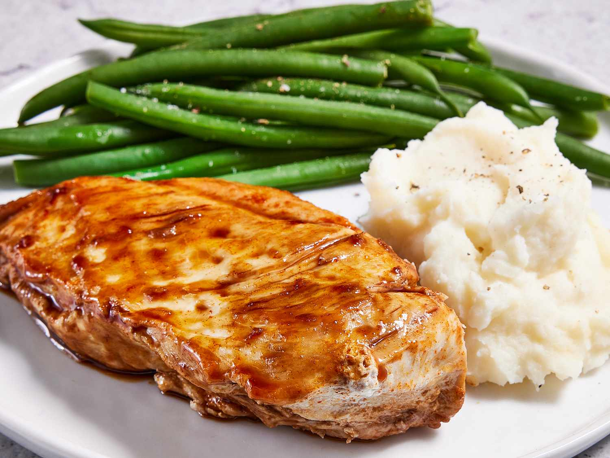

Chicken and Red Wine Sauce Recipe

A simple chicken and red wine recipe with a tasty sauce made from brown sugar, garlic, paprika, salt, and pepper. Everything balanced together makes this dish comforting and yummy! Braised chicken breasts, brazenly good taste.
Ingredients
- 1 tablespoon olive oil
- 1 tablespoon minced garlic
- 3 pounds skinless, boneless chicken breast halves
- 1 tablespoon paprika
- 1 cup brown sugar
- 1 cup red wine
- salt and pepper to taste
Steps
- Heat oil in a large skillet over medium-high heat. Cook garlic in oil until tender.
- Place chicken in the skillet, and cook for about 10 minutes on each side, until no longer pink and juices run clear. An instant-read thermometer inserted into the center should read at least 165 degrees F (74 degrees C).
- Drain oil from the skillet. Sprinkle chicken with paprika and brown sugar.
- Pour red wine around chicken. Cover and simmer, 15 to 20 minutes; lightly baste the chicken with wine sauce while cooking. Season with salt and pepper.